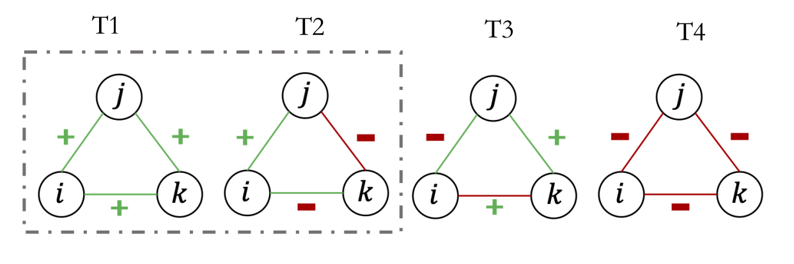
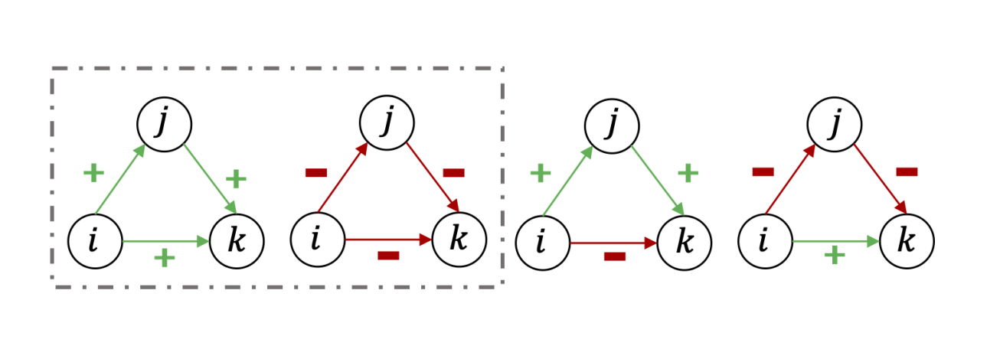
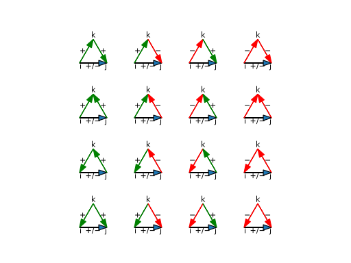
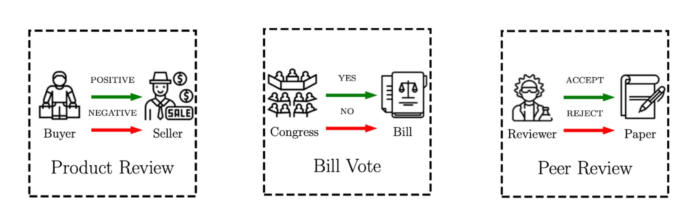
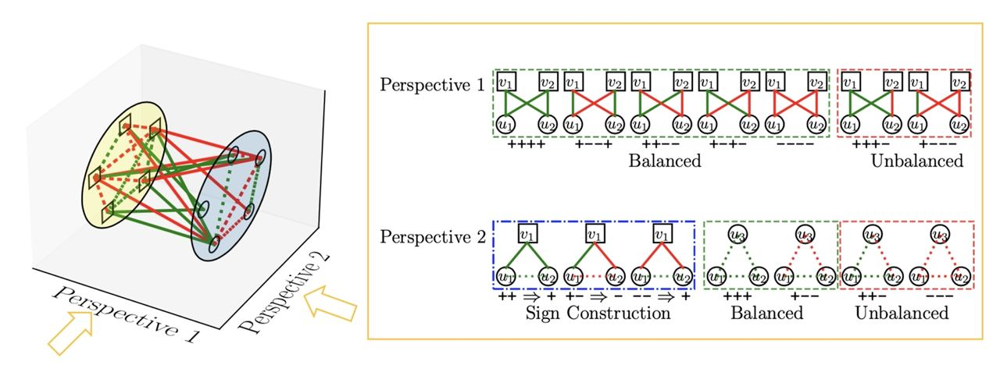

Preliminary for Signed Networks#
What is signed networks?#
Signed networks are such social networks having both positive and negative links. The positive links usually indicate positive emotions such as like and trust. The negative links indicate negative attitudes including dislike and distrust. Signed networks can be used to study a variety of social phenomena, such as mining polarized social relationships in social media. A lot of theories and algorithms have been developed to model such networks (e.g., balance theory and status theory).
Signed Directed Networks#
A signed directed network \(\mathcal{G}=(\mathcal{V}, \mathcal{E}, s)\) , where \(\mathcal{V}\) is the set of nodes in a graph \(\mathcal{G}\), and \(\mathcal{E}\) is the edges with signs and directions. \(\mathcal{E}\) consist of \(\mathcal{E}^{+}\) and \(\mathcal{E}^{-}\) while \(\mathcal{E}^{+} \bigcap \mathcal{E}^{-}=\emptyset\) ; \(\mathcal{E}^{+}\) and \(\mathcal{E}^{-}\) denoted the sets of positive and negative links, respectively.
It can be denoted as the adjacency matrix of the signed network \(A\), where \(A_{i j}=1\) means there exists a positive link from \(u_{i}\) to \(u_{j}, A_{i j}=-1\) denotes a negative link from \(u_{i}\) to \(u_{j}\), and \(A_{i j}=0\) means there is no link from \(u_{i}\) to \(u_{j}\). According to the above definition, it can be seen that \(A\) is not necessarily a symmetric matrix. This matrix can be split into 4 different matrices
where \(A_2^+ = {A_1^+}^T\) and \(A_3^- = {A_4^-}^T\).
For such signed directed networks, two theories (i.e., structural balance theory and status theory) provide a plausible explanation for the structure and dynamics of the observed networks [HSHC21, LHK10] .
Balance Theory#


Fig. 1 Illustration of balance theory#
The structural balance theory is originated in social psychology in the mid-20th-century. It considers the possible ways in which triangles on three individuals can be signed (see Fig. 1), and posits that triangles with three positive signs (T1) and those with one positive sign (T2) are more plausible (balanced) — and hence should be more prevalent in real networks — than triangles with two positive signs (T3) or none (T4).
Balanced triangles with three positive edges exemplify the principle that “the friend of my friend is my friend”, whereas those with one positive and two negative edges capture the notions that “the friend of my enemy is my enemy”, “the enemy of my friend is my enemy”, and “the enemy of my enemy is my friend”.
Status Theory#


Fig. 2 Illustration of status theory#
Balance theory can be viewed as a model of likes and dislikes. However, as Guha et al. [GKRT04] observe in the context of Epinions, a signed link from A to B can have more than one possible interpretation, depending on A’s intention in creating the link.
In particular, a positive link from A may mean, “B is my friend,” but it also may mean, “I think B has higher status than I do.” Similarly, a negative link from A to B may mean “B is my enemy” or “I think B has lower status than I do.”
We consider a positive directed link to indicate that the creator of the link views the recipient as having higher status; and a negative directed link indicates that the recipient is viewed as having lower status. For the triangles in Fig. 2 , the first two triads satisfy the status order, but the last two do not satisfy it. For the first triads, when Status(j) > Status(i) and Status(k) > Status(j), we have Status(k) > Status(i).
Comparison of Balance and Status#
Balance theory was initially intended as a model for undirected networks, although it has been commonly applied to directed networks by simply disregarding the directions of the links [LHK10].
Leskovec et al. [LHK10] find that significant alignment between the observed network data and Davis’s notion of weak structural balance.
Note
Triangles with exactly two positive edges are massively underrepresented in the data relative to chance, while triangles with three positive edges are massively overrepresented. In two of the three datasets, triangles with three negative edges are also overrepresented, which is at odds with Heider’s formulation of balance theory.
These two theories can be analyzed somewhat by counting the number of triangles.
Huang et al. [HSHC21] find that only a tiny fraction of triangles satisfies neither of two theories. About 70% of triads can be consistent with both theories.
Signed Triangle#
Following Chen et al. [CQLS18], we can have following possible types of triads for \(\triangle{ijk}\) when we consider both direction and sign.

Fig. 3 Signed triangles in signed directed networks.#
For these signed triangles, some of the triangles above satisfy balance theory (i.e., “+++”, “++-”) and some satisfy status theory (Status(j) > Status(i) and Status(k) > Status(j), we have Status(k) > Status(i)). Some triangles will make contradictory predictions based on two theories. Chen et al. [CQLS18] further examine the percentage of triads satisfying balance and/or status theory on large scale online social networks.
On one hand, we can count it by computing the intersection of neighboring nodes or using matrix operations. By multiplying these matrices, we can count the number of signed triangular structures below. For example, the first triangle with a positive link from i to j can be computed by
where \(\cdot\) is the matrices product, and \(\odot\) is the Hadamard product, \(\odot (1 - I)\) is used to remove self_loop.
For the python code, you have following operations:
import scipy.sparse
A_1_plus = scipy.sparse.csr_matrix([[0, 1, 1],
[0, 0, 1],
[0, 0, 0]])
res = A_1_plus.dot(A_1_plus)
res.setdiag(0)
res = res.multiply(A_1_plus)
print(res.sum()) # result 1
Signed Bipartite Networks#
A signed bipartite network \(\mathcal{G}=(\mathcal{U}, \mathcal{V}, \mathcal{E})\), where \(\mathcal{U}=\left\{u_{1}, u_{2}, \ldots, u_{|\mathcal{U}|}\right\}\) and \(\mathcal{V}=\left\{v_{1}, v_{2}, \ldots, v_{|\mathcal{V}|}\right\}\) represent two sets of nodes with the number of nodes \(|\mathcal{U}|\) and \(|\mathcal{V}| . \mathcal{E} \subset \mathcal{U} \times \mathcal{V}\) is the edges between \(\mathcal{U}\) and \(\mathcal{V}\). \(\mathcal{E}=\mathcal{E}^{+} \bigcup \mathcal{E}^{-}\) is the set of edges between the two sets of nodes \(\mathcal{U}\) and \(\mathcal{V}\) where \(\mathcal{E}^{+} \cap \mathcal{E}^{-}=\varnothing\), \(\mathcal{E}^{+}\) and \(\mathcal{E}^{-}\) represent the sets of positive and negative edges, respectively.
Since it is a social network, we assume that \(\mathcal{U}\) represents user nodes and \(\mathcal{V}\) represents item nodes. Fig. 5 shows some common application scenarios for signed bipartite networks, including product review, bill vote, and peer review.


Fig. 5 Common application scenarios for signed bipartite networks.#
Some opinions can be viewed as positive relationships, such as favorable reviews on products, supporting the bill, accepting a paper, and so on. Meanwhile, some opinions are negative links that indicate negative reviews, disapproving a bill, rejecting a paper, and so forth. These scenarios can be modeled as signed bipartite networks, which include two sets of nodes (i.e., \(\mathcal{U}\) and \(\mathcal{V}\)) and the links with positive and negative relationships between two sets.
Signed Caterpillars and Signed Butterflies#


Fig. 6 For a signed bipartite network, there exist two different analysis perspectives.#
The “butterfly” is the most basic motif that models cohesion in an unsigned bipartite network, which is the complete 2×2 biclique. Based on the butterfly definition, Derr et al. [DJCT19] extends it to the signed butterfly by giving signs to the links in classical butterfly isomorphism. Except for signed butterfly definition, Derr et al. [DJCT19] denote “signed caterpillars” as paths of length that are missing just one link to becoming a signed butterfly. They use signed butterflies to investigate balance theory in signed bipartite networks.
For signed bipartite networks, the nodes of the same set are not connected. Therefore, Huang et al. [HSC+21] proposed a new sign construction process by judging the sign of the link from \(\mathcal{U}\) to \(\mathcal{V}\).
As shown in Perspective 2 in Fig. 6, when \(u_1\) and \(u_2\) have links with same sign on \(v_1\) (i.e., \(u_1\rightarrow^{+} v_1, u_2\rightarrow^{+} v_1\) or \(u_1\rightarrow^{-} v_1, u_2\rightarrow^{-} v_1\)), we construct a positive links between \(u_1\) and \(u_2\) (i.e., \(\texttt{+}\texttt{+}\Rightarrow \texttt{+}\) and \(\texttt{-}\texttt{-}\Rightarrow \texttt{+}\)). When \(u_1\) and \(u_2\) have different link signs on \(v_1\) (i.e.,, \(u_1\rightarrow^{+} v_1, u_2\rightarrow^{-} v_1\),), we construct a negative links between \(u_1\) and \(u_2\) (i.e., \(\texttt{+}\texttt{-}\Rightarrow \texttt{-}\)). Since \(\mathcal{U}\) is a set of people nodes (eg Buyer, Congress, and Reviewer), the positive and negative links can be regard as agreement and disagreements. For \(\mathcal{V}\), the positive link can be viewed as similarity and vice versa. After constructing the sign links between nodes of the same types, we can use the balance theory analysis in the classical signed networks. So when we analyze the signed bipartite networks, we can have two different analysis perspectives in Fig. 6.
Similarly, we can compute the number of signed Butterflies by computing the intersection of neighboring nodes or using matrix operations. For example, if we want to count the value of first butterfly (i.e., )
References#
Yiqi Chen, Tieyun Qian, Huan Liu, and Ke Sun. "bridge" enhanced signed directed network embedding. In Proceedings of the 27th ACM International Conference on Information and Knowledge Management(CIKM), 773–782. 2018. https://dl.acm.org/doi/10.1145/3269206.3271738.
Tyler Derr, Cassidy Johnson, Yi Chang, and Jiliang Tang. Balance in signed bipartite networks. In Proceedings of the 28th ACM International Conference on Information and Knowledge Management(CIKM), 1221–1230. 2019. https://arxiv.org/abs/1909.06073.
Ramanthan Guha, Ravi Kumar, Prabhakar Raghavan, and Andrew Tomkins. Propagation of trust and distrust. In Proceedings of the 13th international conference on World Wide Web (WWW), 403–412. 2004. http://snap.stanford.edu/class/cs224w-readings/guha04trust.pdf.
Junjie Huang, Huawei Shen, Qi Cao, Shuchang Tao, and Xueqi Cheng. Signed bipartite graph neural networks. In Proceedings of the 30th ACM International Conference on Information & Knowledge Management(CIKM), 740–749. 2021. https://arxiv.org/abs/2108.09638.
Junjie Huang, Huawei Shen, Liang Hou, and Xueqi Cheng. Sdgnn: learning node representation for signed directed networks. In Proceedings of the AAAI Conference on Artificial Intelligence (AAAI), volume 35, 196–203. 2021. https://arxiv.org/abs/2101.02390.
Jure Leskovec, Daniel Huttenlocher, and Jon Kleinberg. Signed networks in social media. In Proceedings of the SIGCHI conference on human factors in computing systems (CHI), 1361–1370. 2010. https://arxiv.org/abs/1003.2424.